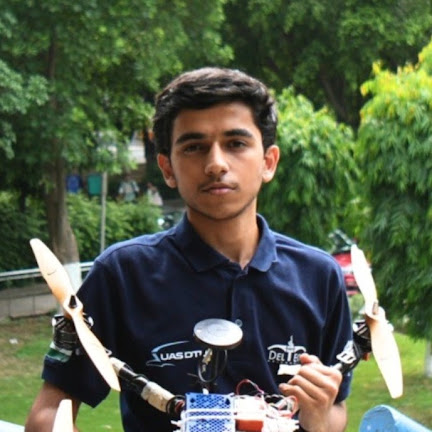
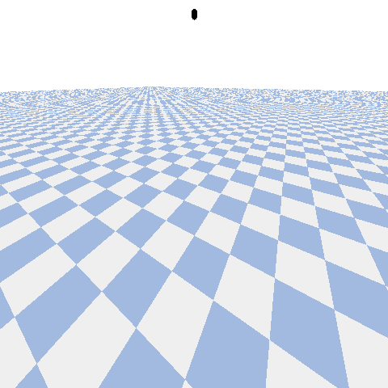
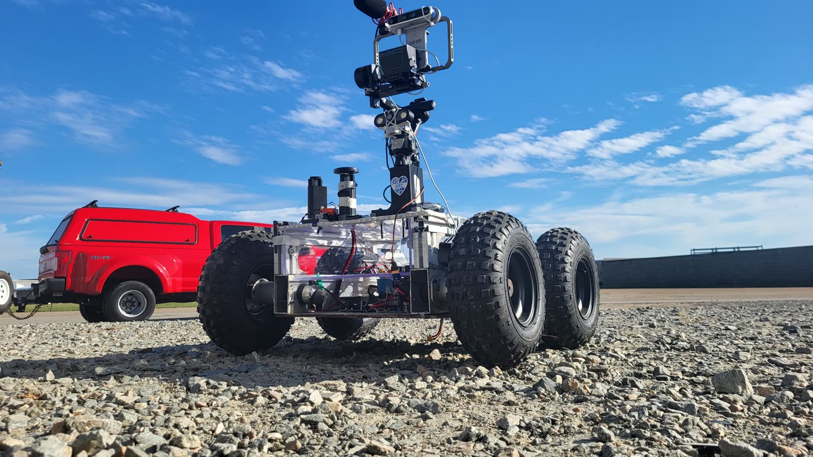
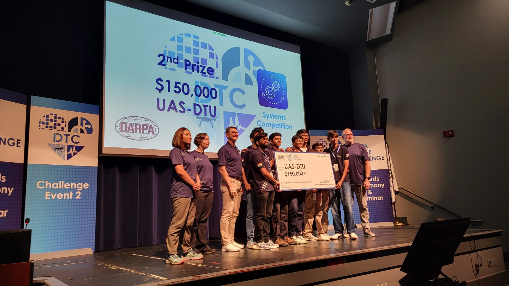
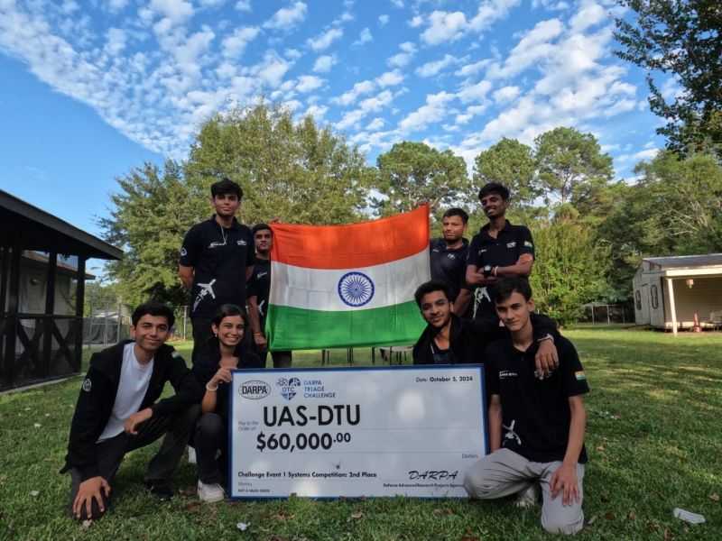
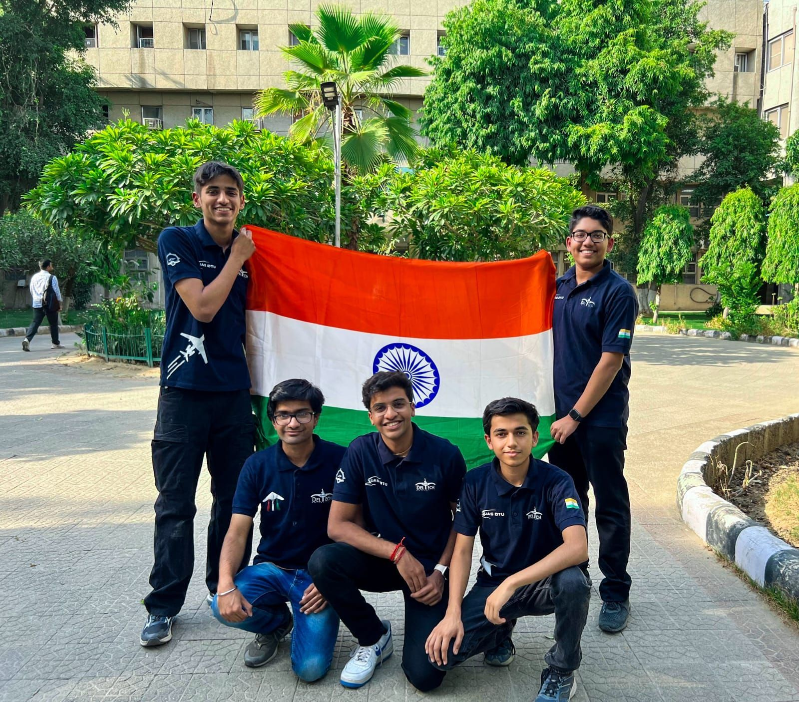
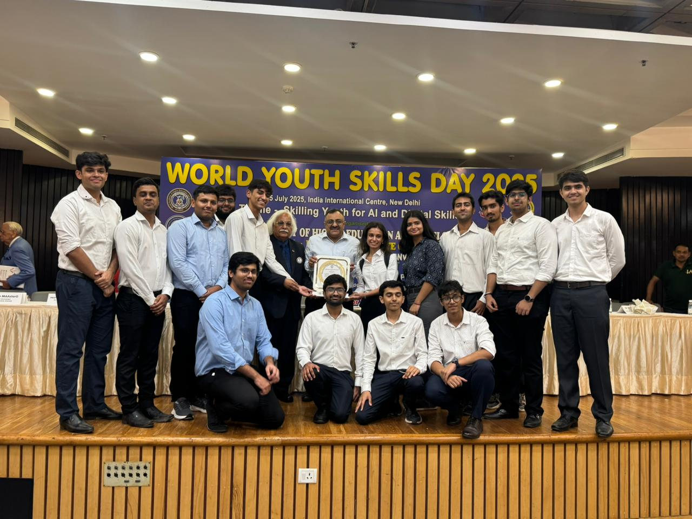
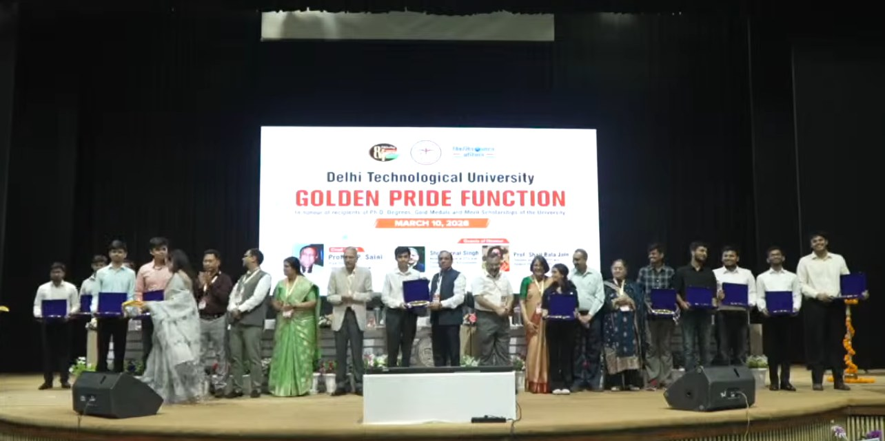

Plann3r: Predicting Planning Costs Grounded in 3D
Under review
Predicts pixel-level planning cost directly, beating connectivity-based search planners across navigation tasks.

Final-year Undergraduate, DTU · SLAM, Learned Navigation & Embodied AI
Hi, I’m Nishant. I’m a final-year undergrad at Delhi Technological University and Autonomy Lead at UAS-DTU.
I work on SLAM, learned navigation and embodied AI. Right now that’s egocentric perception and sim-to-real manipulation at FPV Labs, and vision-language navigation at SAIR Lab. Before that, I’ve worked on LiDAR and visual odometry at RRC, IIIT Hyderabad: degeneracy-aware LiDAR SLAM for corridors and tunnels, then learned costmap prediction for navigation.
I also lead the autonomy team at UAS-DTU, which took 2nd place and $210,000 across two phases of the DARPA Triage Challenge.
Under review
Predicts pixel-level planning cost directly, beating connectivity-based search planners across navigation tasks.
IROS 2025 Active Perception Workshop
Improves pose estimation in corridors and tunnels, where geometry stops constraining it, beating state-of-the-art LOAM methods.
International Conference on Unmanned Aircraft Systems (ICUAS) 2025
YOLOv8 detection, LiDAR-camera 3D mapping and TSP-A* planning, at 98% accuracy in simulation and 90% in the real world.
Turns a short phone video of a real workspace into a simulation replica. Monocular depth, ground fitting, segmentation, mesh generation and pose estimation, exported to USD and loaded in Isaac Sim with an SO-101 arm.
Isaac SimOmniGibsonUSDSAMDepth AnythingPython
LiDAR SLAM for corridors and tunnels: degeneracy-aware weighting, Scan-Context loop closure, factor-graph optimization.
C++PythonLIOSLAMGTSAM
Scores every policy checkpoint over the same counterbalanced layouts in the same order, restaged against the first run’s reference frames. Perturbations at fixed severity turn a score into a curve.
LeRobotPyTorchOpenCVNext.jsSO-101
PX4 UAV mapping a simulated forest with GenZ-ICP, benchmarked against KISS-ICP, fused with GPS and IMU under confidence-based weighting.
C++PythonBashPX4ROS
GPS-denied indoor flight on a lightweight quadrotor, using VINS-Mono for state estimation and EGO-Planner for real-time trajectories.
C++VIOPX4ROS

Added a penalty on orientation rate-of-change to an open RL environment, improving hover stability and convergence speed.
PythonRLStable-Baselines3Gymnasium
Autonomous greenhouse navigation and fruit counting, built on YOLOv8, LiDAR-camera mapping and TSP-A* planning.
PythonROSYOLOv8GazeboArduPilot

Multi-robot triage across ground and aerial platforms in unknown environments. 2nd place across both phases, and the only Asian and undergraduate team to qualify.
C++PythonROSPX4Perception

2nd Position, self-funded category.

2nd Position, and the only Asian and undergraduate team to qualify.

2nd in the simulation stage, 3rd overall.

For contributions to technology and innovation.

Delhi Technological University, presented at the Golden Pride Function.
Email is the fastest way to reach me, at chandna.nishant@gmail.com. Always glad to talk robotics.